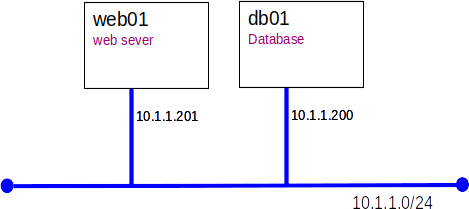
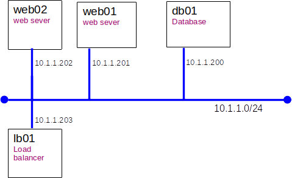

Lab: Application Deployment (3 Tier)
Introduction
It is common to deploy applications in 3 tiers: presentation, application, and DB. For this exercise presentation will be handled by the browser, application by PHP, and the DB by MariDB.
We will deploy a simple sample application. The application is called trs and is a trivial reservations system used to book meetings with professors.
Here is what we will build today

Part A: Server builds
Configure the base OS on the servers.
- db01:
- clone from bookworm_min VM
- OS: Debian 12
- Users: root(adminpass) alice(userpass)
- set IP address: 10.1.1.200
- set hostname: db01
- install MariaDB packages: mariadb-server
- web01:
- clone from bookworm_min VM
- set IP address: 10.1.1.201
- set hostname: web01
- install packages for php: apache2, php, libapache2-mod-php, php-mysql
- install MariaDB client: mariadb-client
- Get the trs application from GitHub
Part B: Build the Database
We will need to do a little DBA work as part of the install.
- Logon to db01 as root
- Tell MariDB to listen for network connections on all interfaces by editing /etc/mysql/mariadb.conf.d/50-server.cnf...
bind-address = 0.0.0.0
- Verify that you can access Mariad by logging on and running a simply query.
- Use the mariadb shell to connect as root
mariadb
- You should now be in the MariDB command interpreter shell. Your promt should look something like...
MariaDB [(none)]>
- Run a tiny query to show the current time
select NOW();
- Exit the MariDB shell
exit
- Run the SQL supplied by the developers (these commands should run silently)
mariadb < 01_build_trs_db.sql
mariadb < 02_add_users.sql
mariadb < 03_add_reservations.sql
mariadb < 04_create_mysql_trs_user.sql
- Check that the DB was built, by logging on as the newly created DB user trs_user. Look in create_mysql_trs_user.sql to determine the password.
mysql -u trs_user -p
- List the application users:
SELECT * FROM trs.users;
- List the available meeting times users:
SELECT * FROM trs.reservations;
Part C: Configure web01 and install the trs php application
- Verify that we can access the trs DB from web01
mariadb --host db01 --user trs_user -p
- Run an SQL query to list all the trs application users.
- Copy all the trs PHP files to /var/www/html/trs
- Test our work with a browser. http://10.1.1.201/trs/trs.php
You will likely need to do a little trouble shooting now
Part D: Load Balancing
In many cases we use horizontal scaling to increase capacity. We can increase capacity by adding a web server and using a load balancer to spread the users across the web servers.
We will use haproxy as our load balancer.

- Clone web02 from web01
- Clone lb01 from bookworm_min
- Install haproxy on lb01
- Confiugre haproxy to froward http requests to w01 and w02 by appending this fragment to /etc/haproxy/haproxy.cfg
frontend http
bind 10.1.1.203:80
mode http
default_backend web-backend
backend web-backend
balance roundrobin
server web01 10.1.1.201:80 check
server web02 10.1.1.202:80 check
Part D: Test from multiple browsers
Test your handiwork from at least two browsers connecting to the bridged adapter on lb01.
- Pay attention to the server=[web01|web02]message on each page.
- Do you stay on a server?
- Log in and see how things go.
If you think everything is fine, you are likely mistaken - talk to your instructor.
Part E: Make it sticky
Tying a user to a specific back-end server for an entire 'session' is very important for web applications to run smoothly.
Here's a nicely written article describing sticky sessions.
Part F: Grading
Demonstrate your trs to your instructor.
Clean up
You will need web01 and db01 for future labs.